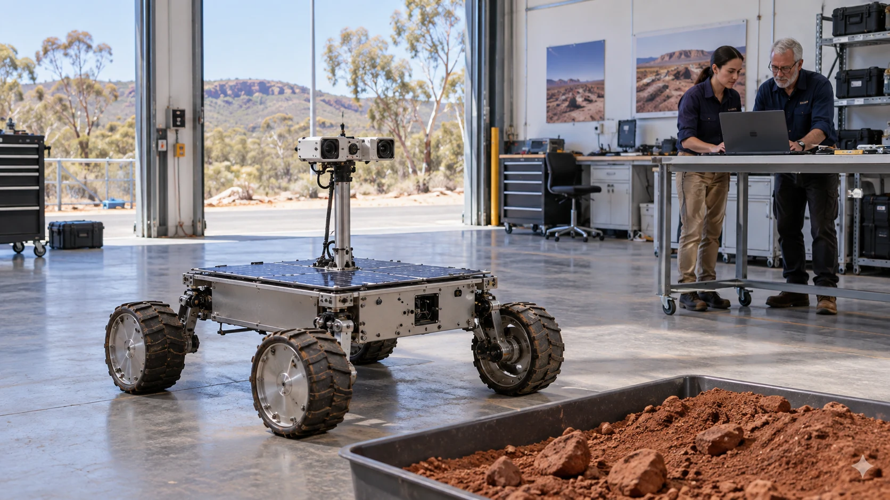

Below the seabed
Service tunnels in the sand.
 Sandworm Subterranean SystemsMoreton Bay research & development
Sandworm Subterranean SystemsMoreton Bay research & developmentChapter 06 / 17 · Robotic aquaculture
Explore responsible aquaculture and seafloor construction, with permission and leadership from Quandamooka rights holders.
Think of a coral colony growing into connected living structures. Sandworm asks whether robots could build rooms from beneath the seabed, with the rooms resting directly on the sea floor for stability. The analogy is about how the system grows, not copying coral's shape.
Service tunnels in the sand.
Ground-supported rooms.
Responsible shellfish and seaweed research.
Skills for building where people cannot easily go.
Whether the rooms can be supported safely, and whether a tunnel connection makes sense, are questions for research.
QYAC reports that the 2011 determinations recognised native title across about 54,408 hectares of land and water, including about 29,505 hectares offshore with non-exclusive rights. That does not grant an aquaculture lease or identify places available for development.
Any work would need the invitation and agreement of the relevant rights holders and sea Country custodians. They would decide how culture, ownership, local jobs, ranger roles, knowledge and benefits are handled. A Quandamooka-majority enterprise is an option if they choose it.
QYAC native title history ↗ · Queensland sea Country co-management context ↗
Research native shellfish and seaweed suited to the water, with attention to food safety and biosecurity.
Measure water quality, currents, oxygen, temperature and changes in marine life.
Inspect, clean, exchange parts and take samples under supervision.
Test how materials affect seagrass, fish, sediment and invasive species.
Compare isolated power and communications links with standalone systems.
Plan for retrieval and restoration before putting anything in the water.
Use simulations and controlled tanks before marine trials. Protect dugong, turtles, seagrass, fisheries and sensitive habitats. Check noise, light, sediment and the effects of structures. Plan to remove equipment if needed.
| Measure | Evidence required |
|---|---|
| Ecological carrying capacity | Site-specific baseline and independent cumulative-impact assessment |
| Productivity | Saleable harvest per module, survival, seasonality, disease and product testing |
| Robotic reliability | Intervention rate, recovery time, energy per task, loss and fault records |
| Whole-life economics | Cost per saleable kilogram and net return including decommissioning |
| Local outcomes | Agreed ownership, paid training, benefit distribution and ranger-led monitoring |
Queensland marine aquaculture ↗ · Aquaculture approvals ↗ · Marine park permits ↗
Building, checking and repairing machinery beneath the sea shares some challenges with assembling a station on the Moon, an asteroid or another planet. Robots, replaceable parts, digital models and remote fault recovery could become transferable skills. Water, vacuum, gravity and temperatures are very different, so marine success alone would not prove space readiness.

| Sea Country research | Off-world analogue | What does not transfer directly |
|---|---|---|
| Robotically constructed seafloor rooms and associated modules | Habitat, station and instrument assembly | Vacuum, gravity, thermal cycling and material behaviour |
| Underwater navigation and inspection | Remote inspection in inaccessible environments | Optical conditions, buoyancy, traction and radiation |
| Protected services and replaceable interfaces | Power, data and fluid distribution across a modular base | Pressure boundary direction, life support and thermal design |
| Local processing of lawful recovered material | In-situ resource utilisation research | Regolith chemistry, volatiles, contamination and process energy |
| Supervised autonomy and failure recovery | Operations with limited crew and delayed communication | Different communications and recovery opportunities |
NASA ARMADAS ↗ · NASA in-space servicing, assembly and manufacturing ↗
Make marine components from sand · Robotics and digital models · Local ownership and Country.